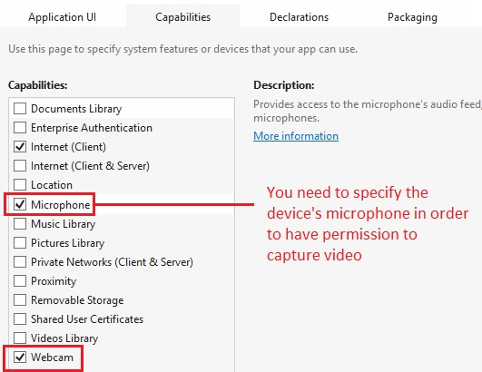

The following code snippet shows how to use a device's built-in camera to capture video.
Note that you must declare a request for permission to use the device in the package manifest:
private async void OnTakeVideo(object sender, RoutedEventArgs e) { // Create a new camera capture object var camera = new CameraCaptureUI(); // Capture the video var file = await camera.CaptureFileAsync(CameraCaptureUIMode.Video); if (file != null) { // Set the Media control's source property video.SetSource(await file.OpenReadAsync(), file.ContentType); } }